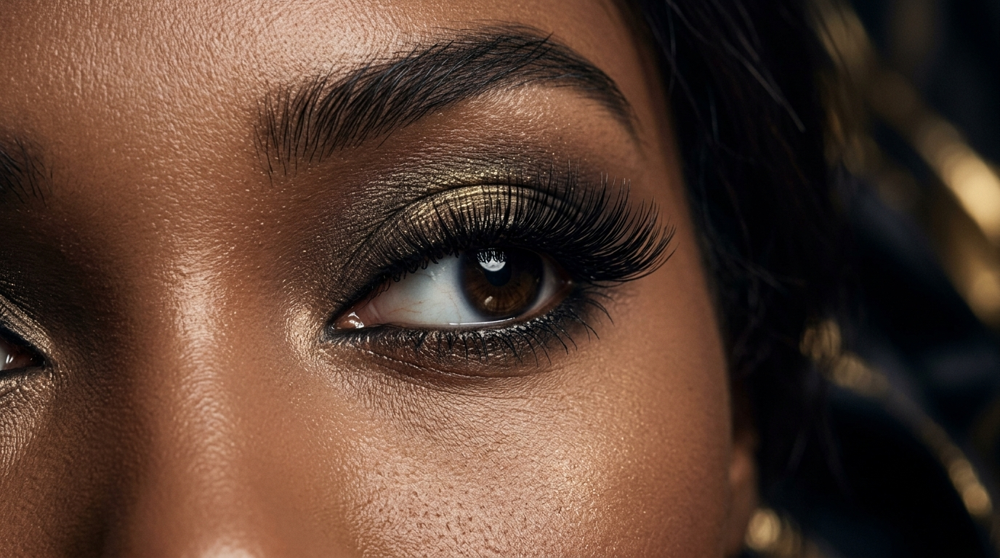
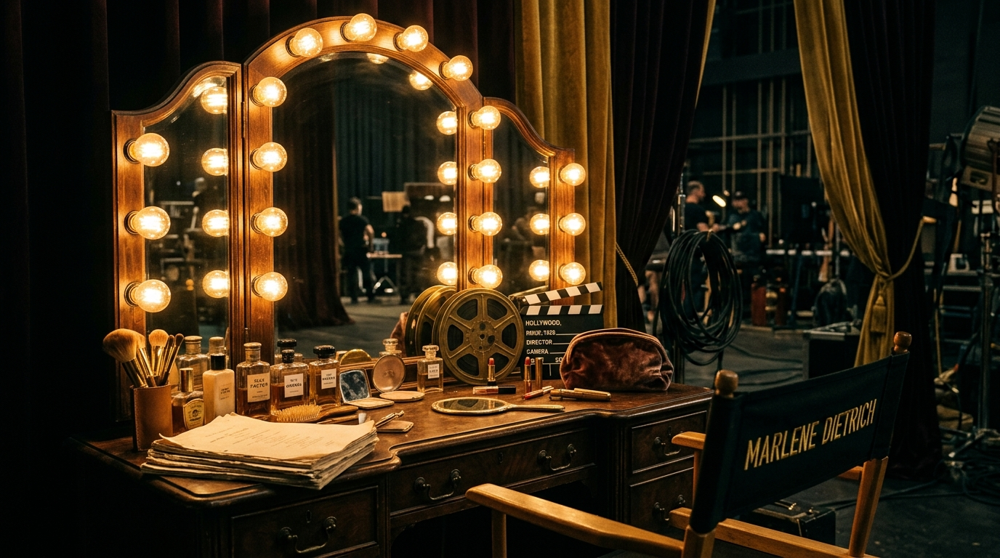
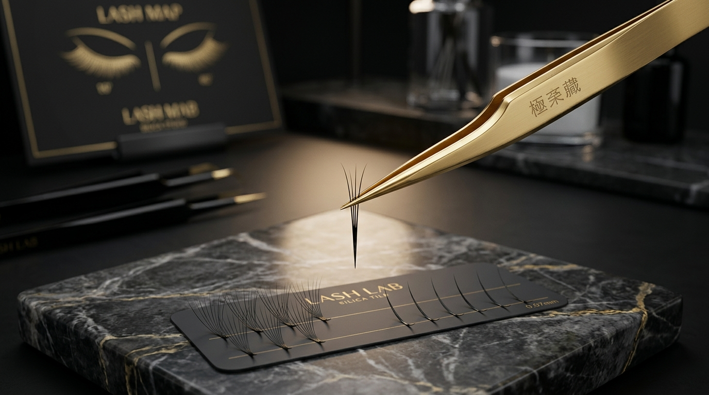
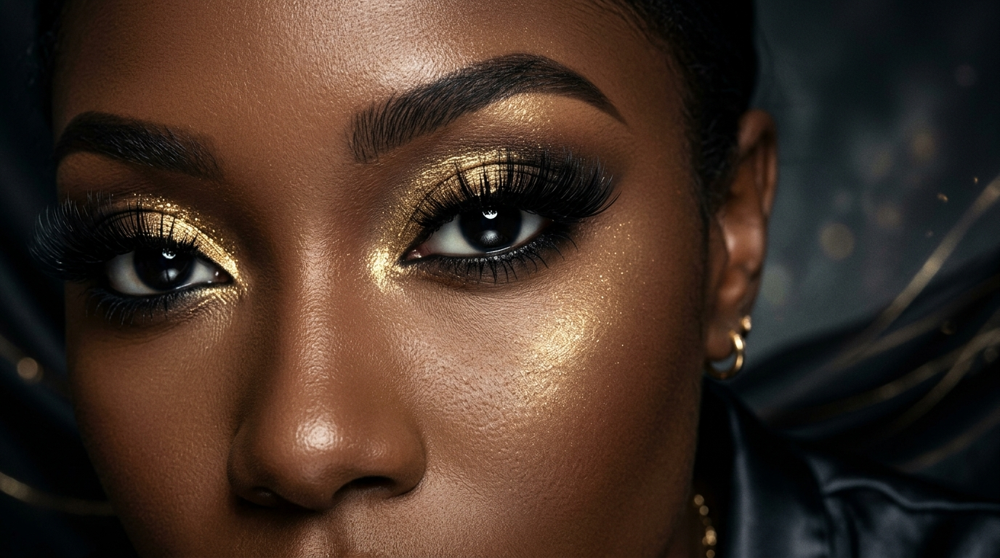
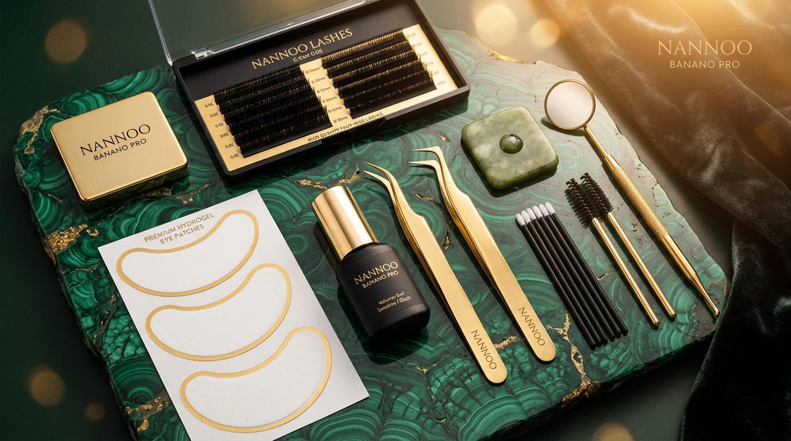
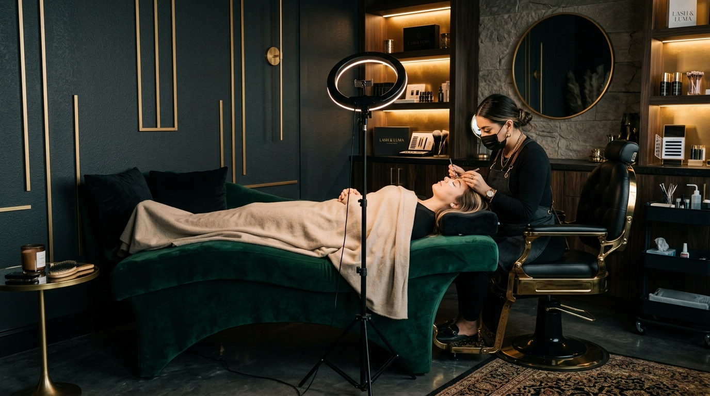

Вступ до професії елітного Лешмейкера
Почніть свій шлях у б'юті-індустрії з фундаментальних знань від Tori Lash Academy. Наш курс створений для тих, хто прагне надавати послуги преміум-класу, поєднуючи естетику, безпеку та ювелірну точність.
Ваш перший крок до майстерності
Сьогодні леш-мейкери не просто приклеюють вії — вони створюють архітектуру погляду, виправляють асиметрію та дарують жінкам впевненість у собі. У цьому модулі ви дізнаєтеся про витоки процедури, розберете кожен елемент стартового набору та зрозумієте, як організувати ідеальне робоче місце.

Голлівуд – місце появи перших нарощених вій
Мало хто знає, що популярна нині процедура має майже столітню історію. Вона зародилася у гримувальних кімнатах Голлівуду, де було важливо постійно змінювати образи актрис.
Революція Макса Фактора
На зорі минулого століття легендарний візажист Максиміліан (Макс) Фактор співпрацював з акторським складом мюзиклу «Чикаго». Продумуючи образ чарівної кокетки Роксі, він запропонував актрисі Філліс Хейлі додати більше жіночності.
Кіно проти Реальності
Макс Фактор акуратно приклеїв тонку бахрому штучних вій до верхньої повіки. Вони ефектно виглядали на екрані та сцені, але в повсякденному житті того часу були не дуже практичними, важкими та виглядали неприродно.
Згодом технологія почала еволюціонувати від грубої бахроми на нитці до більш витончених рішень.

Японія: Від пучків до ювелірного нарощування
Наступником Макса Фактора стала Японія. Саме тут почали створювати матеріали, які дозволили жінкам носити штучні вії в повсякденному житті тижнями.
Пучкове нарощування (90-ті)
Японські майстри вдосконалили техніку: пучки з декількох вій клеїли до повік за допомогою спеціального гелю. Це дозволяло милуватися віями протягом 3-5 днів. Наприкінці 90-х практично кожна дівчина могла дозволити собі цей виразний ефект.
Сучасна японська методика
Справжнім проривом стало створення волокна, яке за своєю структурою є майже ідентичним натуральній вії: більш товсте внизу і витончене (тонке) вгорі. Сьогодні поресничне нарощування виглядає максимально природно і дозволяє жінкам взагалі забути про туш.

Все про нарощування вій для початківців
Сучасна процедура в косметології, яка дозволяє значно збільшити довжину, об'єм та змінити форму вій. Це ювелірна робота, що вимагає точних знань та якісних матеріалів.
Чому клієнти обирають цю процедуру?
Найчастіше до нарощування вдаються, коли природні вії надто короткі, ламкі або рідкі. Проте, естетичних причин набагато більше:
Корекція форми очей
Бажання змінити розріз очей, підняти опущені куточки або відкрити глибоко посаджені очі.
Ефект ідеального макіяжу
Усунення проблеми напівпрозорості або блідого кольору натуральних вій. Жодної потьоклої туші!
Відсутність природного вигину
Надання гарного завитка (вигини C, CC, D, L), що миттєво відкриває та освіжає погляд.
Фантазійні та сценічні образи
Створення яскравих лялькових, лисячих або театральних ефектів для особливих подій.

Стартовий набір лешмейкера
Новачкові не обов'язково витрачати останні гроші на весь асортимент ринку. Для успішного початку кар'єри в Tori Lash Academy ми рекомендуємо базовий професійний набір. Натисніть на картку інструменту, щоб побачити його огляд та фото.
Професійний Клей
Натисніть для оглядуПраймер / Знежирювач
Натисніть для оглядуРемувер (Крем / Гель)
Натисніть для оглядуНабір Пінцетів
Натисніть для оглядуАксесуари (Камінь, Лунки)
Натисніть для оглядуГідрогелеві Патчі
Натисніть для оглядуМікробраші та Щіточки
Натисніть для оглядуПалетки вій (Мікси)
Натисніть для оглядуЗахист (Маски, Шапочки)
Натисніть для огляду
Організація робочого місця та поради майстру
Комфорт клієнта та здоров'я майстра — основа довгострокового успіху. Правильно обладнаний кабінет дозволяє працювати годинами без перевтоми.
Ергономіка кабінету
Зручність клієнта: М'яка кушетка або крісло з ортопедичною подушкою середньої м'якості, що запобігає затіканню шиї. Плед для затишку.
Комфорт майстра: Стілець зі спинкою на колесах із регулюванням висоти. Це запобігає болям у шиї та спині під час довгих процедур.
Освітлення: Переносні лампи з білим холодним світлом. Очі не повинні швидко втомлюватися, а майстер має чітко бачити кожну вію.
Золоті правила новачка
Не женіться за заробітком: На початковому етапі працюйте повільно. Краще відмовити деяким клієнтам, але зробити роботу бездоганно. Працюйте на якість, а не на кількість!
Ведіть клієнтську базу: Фіксуйте імена, схеми нарощування, особливості вій та вподобання (в Excel або блокноті).
Зворотний зв'язок: Завжди запитуйте клієнта через 1-2 дні, чи зручно тримаються вії.
Екзаменаційний Квіз Модуля 1
Закріпіть отримані знання в Tori Lash Academy, відповівши на запитання. Це допоможе вам впевнено перейти до практичної частини курсу.
Яка країна стала наступником Голлівуду та створила сучасну волосничну технологію нарощування вій?
Модуль 1 успішно пройдено!
Ви підтвердили свої знання з історії, матеріалознавства та організації робочого місця. Вітаємо у світі професійного нарощування Tori Lash Academy!